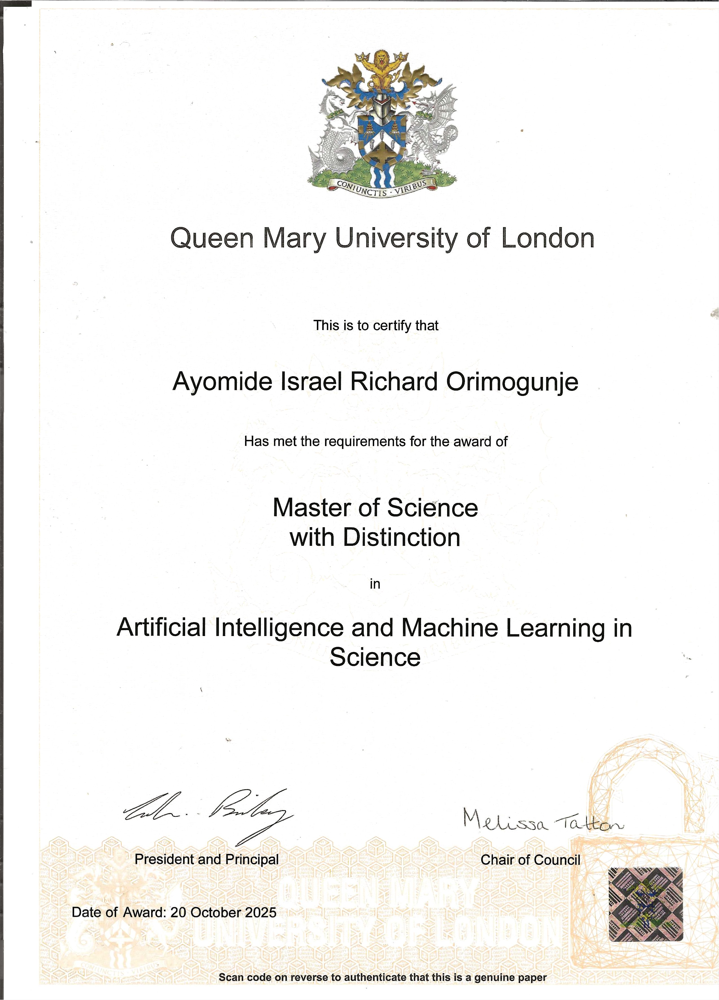
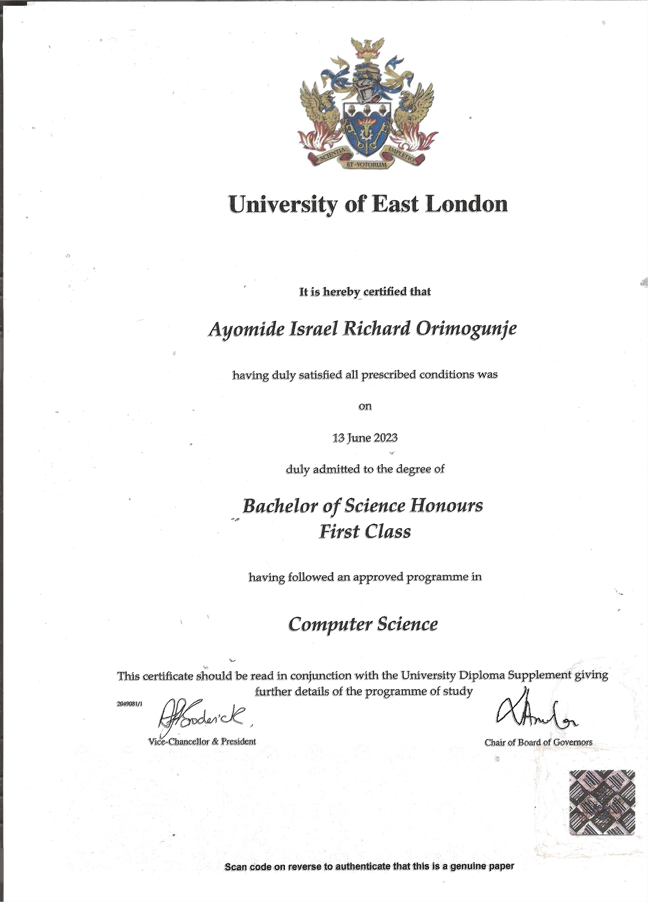

AI/ML Engineer & Full-Stack Developer
Awarded First Class Honours in Computer Science (University of East London) | Recently completed MSc in Artificial Intelligence and Machine Learning in Science with DISTINCTION (Queen Mary University of London, 2024-2025) | Specializing in Neural Networks, Deep Learning, Cloud Deployment & Scientific AI Applications
Richard.Orimogunje@gmail.com
07308 996496
London, United Kingdom
I am an accomplished Computer Science graduate with First Class Honours from the University of East London, complemented by a recently completed Master of Science in Artificial Intelligence and Machine Learning in Science, awarded with DISTINCTION from Queen Mary University of London (2024-2025).
My academic journey has equipped me with a robust theoretical foundation in AI/ML, particularly in neural networks, deep learning architectures, and their scientific applications.
I possess comprehensive software engineering skills combined with hands-on experience in developing, training, and deploying machine learning models for real-world and scientific challenges. My technical expertise spans from fundamental algorithm development to cloud-based deployment and optimization of AI systems.
I am actively seeking opportunities as an AI/Machine Learning Engineer or Developer, where I can leverage my technical understanding, problem-solving abilities, and passion for innovation to contribute to impactful, cutting-edge projects in the AI/ML domain.
AI/ML Engineer or Developer Roles
Specializing in neural networks & cloud AIDISTINCTION in MSc AI/ML
1st Class BSc Computer ScienceNeural Networks & Cloud Deployment
Scientific AI ApplicationsApplied Convolutional Neural Networks to classify neutrino interactions in simulated DUNE Near Detector Liquid Argon TPC data.
Designed and deployed an AI-powered chatbot leveraging Google Gemini API, Firebase Firestore/Storage, and Streamlit.
Complete MERN stack web application with Augmented Reality for virtual try-ons and fit recommendations.
CRUD application with CSV data processing, filtering, and analytics for COVID-19 statistics.
Led team development of front-end application, enhancing teamwork and leadership skills.
CRUD application with HMRC-compliant tax calculations and payslip generation.
2024 - 2025
Expected: Distinction
Specialized in neural networks, deep learning, and scientific applications of AI/ML.

2020 - 2023
First Class Honours
Awarded for Outstanding Engagement in the BSc program.

Queen Mary University of London (2024-2025)
Awarded top classification for outstanding academic performance and research in AI/MLUniversity of East London (2020-2023)
Graduated with highest honours classificationUniversity of East London - BSc Computer Science
Recognized for exceptional dedication, engagement, and academic contributionSpecialized in Neural Networks & Deep Learning
Advanced coursework in PyTorch, TensorFlow, CNN architectures, and scientific ML applicationsProfessional and academic references available upon request.